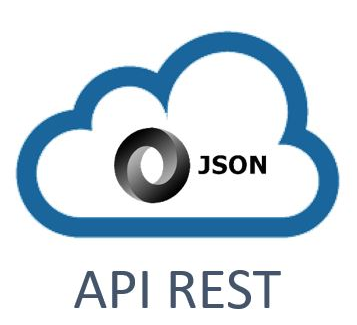
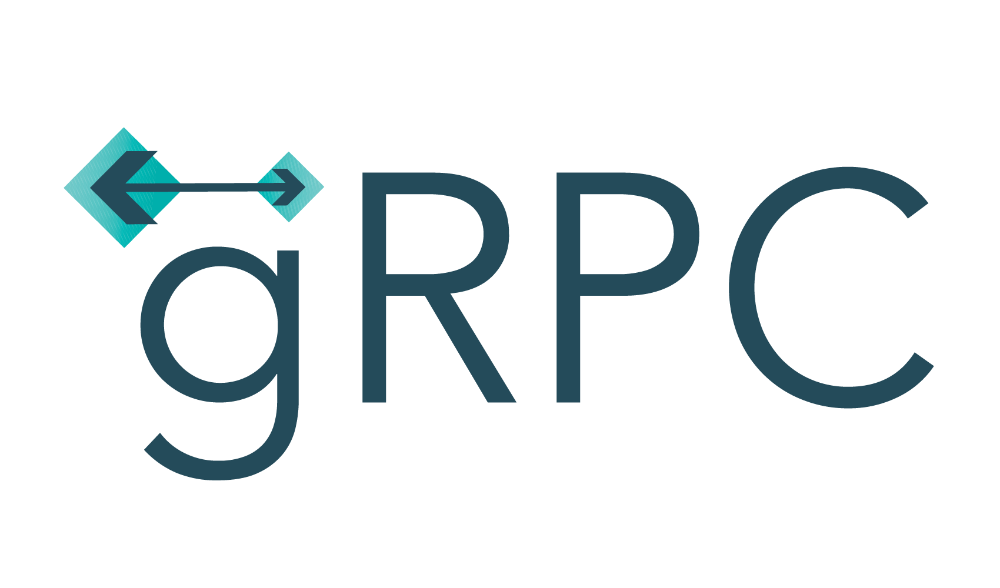
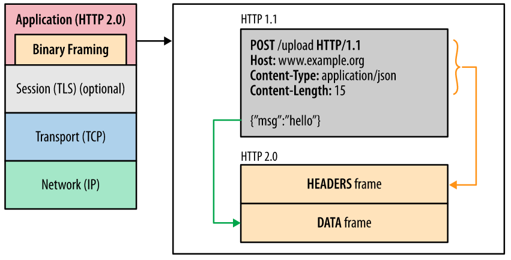
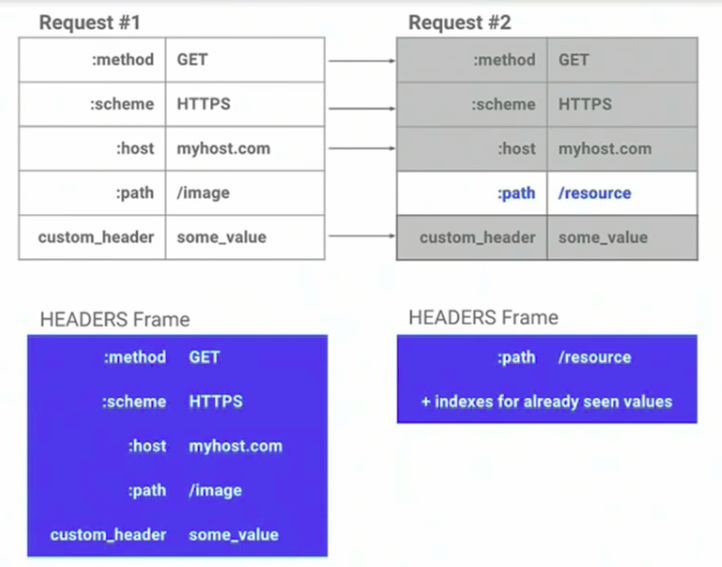

A RFC to migrate from REST to gRPC
 11 Jan 2021
protobuf is the most popular
In 2015, Google open-sourced gRPC. But g doesn't stand for Google.
Request/Response MultiplexingHeader CompressionAllows payloads from multiple requests with the same header, thus identifying it as a single request
HTTP/2 only sends the header value if it is different from the previous header.
Uses it's own compression mechanism which is more efficient than JSON as bytes.
More detailsdata-service/middleware.js
const res = await makeBackendRequest(
req,
"grpc/endpoint/",
{
data: protoRequest
.encode(protoRequest.create({ param }))
.finish(),
headers: { "content-type": "binary/octet-stream" },
method: "POST",
useProto: true, // superagent middleware turns it into a buffer
},
);
Sample proto file
syntax = "proto3";
package todos;
message Todo {
string content = 1;
bool finished = 2;
}
message GetTodoRequest {
int32 id = 1;
}
service TodoService {
rpc GetTodoById (GetTodoRequest) returns (Todo);
}
Sample request file. No REST HTTP request
const {GetTodoRequest} = require('./todos_pb.js');
const {TodoServiceClient} = require('./todos_grpc_web_pb.js');
const todoService = new proto.todos.TodoServiceClient('http://localhost:8080');
const todoId = 1234;
var getTodoRequest = new proto.todos.GetTodoRequest();
getTodoRequest.setId(todoId);
var metadata = {};
var getTodo = todoService.getTodoById(getTodoRequest, metadata, (err, response) => {
if (err) {
console.log(err);
} else {
const todo = response.todo();
if (todo == null) {
console.log(`A TODO with the ID ${todoId} wasn't found`);
} else {
console.log(`Fetched TODO with ID ${todoId}: ${todo.content()}`);
}
}
});